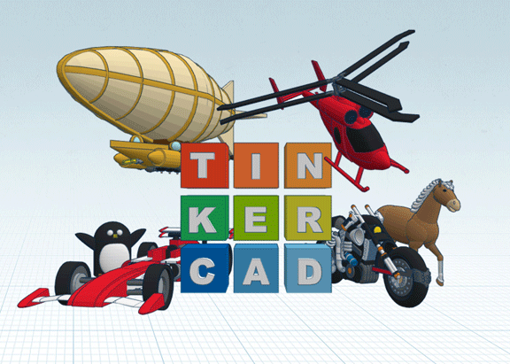
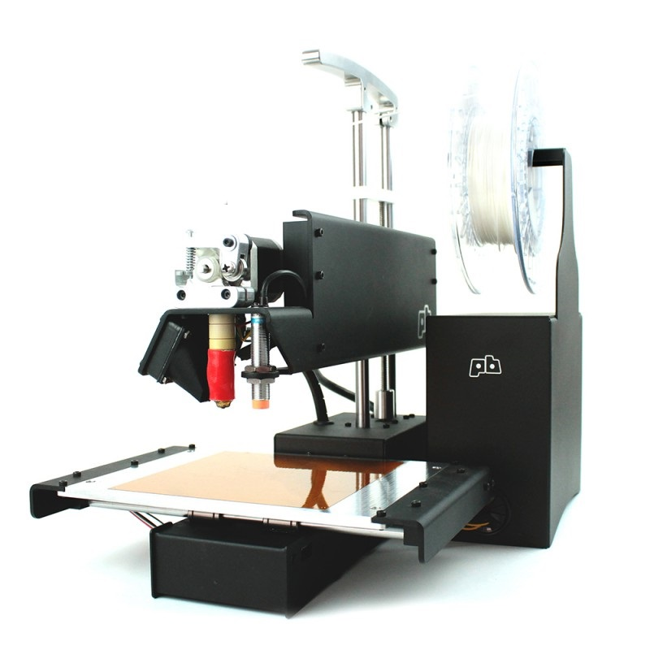

Modélisation, simulation et prototypage par impression 3D#
La conception d’un mécanisme commence par la réalisation d’un modèle numérique 3D pour permettre sa simulation et son prototypage.
Pour cela, plusieurs solutions s'offrent à nous...
BlocksCAD :#
BlocksCAD permet de générer des modèles 3D de pièces avec la programmation graphique par blocs :

Sprint de découverte à faire vous même : ...
Défin n°1 : Modéliser un pion avec BlocksCAD#

A l'adresse https://www.blockscad3d.com/editor/. Dans la barre de menu, sous l'icone en forme de "planète", choisir la langue : Français. Puis cliquer sur le bouton "Créer un compte".
Créer un compte en utilisant un pseudo "correct", le mot de passe de votre choix, et votre adresse mail : prenom.nom@eleves.ecmorlaix.fr
Source : Cyril VIGNET
Voici une proposition d'étapes à suivre pour la prise en main de BlocksCAD et la modélisation d'un pion du casse-tête.
A chaque étape, reproduire l'algorithme en glissant les blocs concernés depuis le menu vertical des fonctions jusque dans la fenêtre centrale du programme puis, régler le "Smooth" sur "High" et cliquer sur le bouton "Générer un rendu".


Il s'agit maintenant de renommer le projet, par exemple "monPion-prenom_nom", afin de l'enregistrer en cliquant sur le bouton "Sauver" ;
Enfin, il suffit de régler le format de fichier sur "STL binary" puis de cliquer sur le bouton "Générer STL" afin de télécharger un fichier du modèle exploitable pour l'imprimante 3D.
Défin n°2 : Modéliser un support imprimable#
A l'aide de BlocksCAD, imaginer un modèle pour le support des pions.
Afin de recevoir les six pions du jeu tout en laissant un emplacement libre, cette pièce doit comporter sept trous cylindriques de diamètre 8mm et de profondeur 9mm, distants chacun d'un pas de 17mm.
Il sera judicieux d'utiliser une boucle de répétition.
Les autres formes du support sont libres dans la mesure où le modèle généré reste imprimable avec la printrBot.
Défin n°3 : A vous de jouer...#
Avec l'aide du guide pour BlocksCAD réalisé par Cyril VIGNET, imaginer et prototyper une modélisation3D pour votre projet...
Prolongement : autres ressources...#
TinkerCAD :#

Pour utiliser TinkerCAD il faut s'incrire en rejoignant une classe avec le code fournit. A l'instar de BlocksCAD, TinkerCAD-codeblocks permet de générer des modèles 3D des pièces avec la programmation graphique par blocs. Mais TinkerCAD-designs permet également de modéliser à partir d'une bibliothèque de modèles 3D. Par ailleurs TinkerCAD-circuits a absorbé l'ancien 123Dcircuit et permet de modéliser, programmer et simuler des circuits électroniques à base d'Arduino et de BBC micro:bit.
Sprint de découverte à faire vous même : ...
Défin n°1 : Modéliser un pion avec TinkerCAD-codeblocks#

A l'adresse https://www.tinkercad.com/learn/codeblocks/, rejoindre la classe avec le code et le pseudo donnés.
A l'adresse https://www.tinkercad.com/dashboard, choisir Codeblocks dans le menu de gauche, puis cliquer sur le bouton "Créer un Codeblock" puis "Nouvelle conception"

Voici une proposition d'étapes à suivre pour la prise en main de TinkerCAD-codeblocks et la modélisation d'un pion du casse-tête.
A chaque étape, reproduire l'algorithme en glissant les blocs concernés depuis le menu vertical des fonctions jusque dans la fenêtre centrale du programme puis cliquer sur le bouton
Il s'agit maintenant de renommer le projet, par exemple "monPion-prenom_nom", afin de l'enregistrer en cliquant sur le bouton "Exporter" au format "OBJ". On peut également l'exporter au format "Part" pour pouvoir l'importer ensuite dans un projet TinkerCAD-designs ;
Enfin, il suffit de l'exporter au format "STL" afin de télécharger un fichier du modèle exploitable pour l'imprimante 3D.
Défin n°2 : Modéliser un support imprimable#
A l'aide de TinkerCAD-codeblocks, imaginer un modèle pour le support des pions.
Afin de recevoir les six pions du jeu tout en laissant un emplacement libre, cette pièce doit comporter sept trous cylindriques de diamètre 8mm et de profondeur 9mm, distants chacun d'un pas de 17mm.
Il sera judicieux d'utiliser une boucle de répétition.
Les autres formes du support sont libres dans la mesure où le modèle généré reste imprimable avec la printrBot.
Défin n°3 : A vous de jouer...#
Imaginer et prototyper une modélisation 3D pour votre projet...
Prolongement : autres ressources...#
TinkerCAD-codeblocks est une application encore récente, des tutoriels devrait apparaitre bientôt. En attendant voici un échantillon de ce que l'on trouve aujourd'hui à ce sujet sur le web :
- https://johnumekubo.com/2018/06/26/tinkercad-codeblocks-beta
- https://blog.tinkercad.com/2018/06/24/cad-and-code-together-at-last
- https://medium.com/@ronm333/an-introduction-to-tinkercad-codeblocks-b896dff5f5f9
- https://hackaday.com/2018/07/06/tinkercad-coding-tricks-to-automate-modeling
Impression 3D :#

Sprint de découverte à faire vous même : ...
Mise en situation#
L'impression tridimensionnelle par dépôt de fil plastique en fusion, FDM (Fused Deposition Modeling), comme le fait notre imprimante Simple Metal de marque printrBot, implique la réalisation préalable d'un modèle de la pièce souhaitée avec un logiciel de Conception Assistée par Ordinateur (C.A.O., C.A.D. en anglais).
Imprimer un pion avec CURA et la printrBot#
Vérifier que l'imprimante est bien alimentée (bouton on/off à l'arrière de l'alimentation) et connectée en USB au PC.
Démarrer alors le logiciel Cura et exécuter les étapes suivantes :


Lorsque la pièce est terminée, il faut attendre que la température du plateau soit en dessous des 50°C pour décoller le pion.
Prolongement :#
Aller plus loin grâce au cours de modélisation 3D de M. Lossendière et découvrir plus particulièrement la solution OnShape
Sprint de découverte à faire vous même : ...

OnShape est une application web qui permet de modéliser en 3D à la manière de SolidWorks mais dans un navigateur. Elle sera donc disponible sur l’ensemble de vos appareils (ordinateur, tablette, smartphone) tant au lycée qu’en dehors.
Pour utiliser Onshape, et bénéficier gratuitement d’un compte professionnel pour l’éducation, il faut s'inscrire sur le site https://www.onshape.com/edu en cliquant sur le boutton "Get Started".
Educator et student ont les mêmes possibilités qu’un compte PRO. Pour un compte Education, le logo EDU apparaîtra sur tous les documents.


Une fois le compte activé, on peut gérer les paramètres du compte à partir du menu déroulant en haut à droite, en cliquant sur "My account".
On peut alors gérer les préférences à partir du menu listé à gauche. Il est utile notamment de changer les unités par défaut, opter pour une manipulation dans la fenêtre graphique équivalente à SolidWorks…
Par la suite, pour modéliser avec Onshape il faut se connecter sur le site https://cad.onshape.com
Des tutoriels pour Onshape sont disponibles sur le site : https://learn.onshape.com
Ressources :